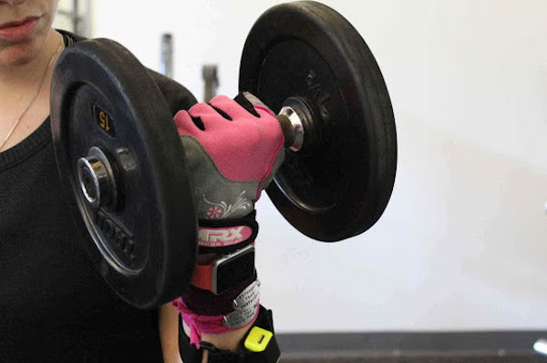

Fungi image classification
Recognizing 1394 fungi species from over 100,000 images. Link to the Kaggle competition. In the challenge I used transfer learning with the model Resnet34 with image augmentation and progressive resizing. In the testing set the final probability that the correct label was present in the top three predictions was 54%. During the project I learned a lot about using the fastai library, neural net training process and project organization. The project can be found from Github

Relevant research article search
The idea in the project was to create an alternative automated method for finding relevant research articles. The idea of the project was to first find articles that match a given search query. After finding a list of relevant articles I went through their reference lists and counted the number of occurances for each reference. The most relevant articles were concidered to be the ones with most references. During the project I learned a lot about webscaping and about research article search engines. The project can be found from Github
On-Device Machine Learning Activity Recognition
A project done in co-operation with Aalto University and Verto Analytics. The goal of the project was to create and implement a ML-model on mobile device for predicting user's physical activities. The model used sensor data gathered from the phone as an input and as an output it returned a physical activity like walking or sitting. In the project I worked as the scrum-master, but as I was also one of the most experienced developer's I helped with the Android and ML development. Link to Code. Link to Medium article.

Activity Improvement
Exercice performance prediction using the Weight Lifting Exercises Dataset. Data set contained data from accelerometers on the belt, forearm, arm, and dumbell of 6 participants. After cleaning the dataset and performing feature selection, achieved an out-of-sample accuracy of 0.9997 with a random forest classifier. The biggest learnings from the project was the importance of cleaning well the dataset, and discovering different ways for feature selection. Github
Titanic: Machine Learning From Disaster
Predicting which passenger survived the Titanic shipwreck based on passanger attributes e.g. sex, age and socio-economic status. Link to Kaggle competition. The final random forest model was able to get an out-of-sample accuracy of 0.77990. Biggest learnings from this project were methods for dealing with missing data and ways to do feature engineering. Github
House Price Prediction
Predicting house price from an extensive set of house features. Link to the Kaggle competition. The final out-of-sample RMSLE error between the predictions and outcomes was 0.13393. The project though me a lot about feature -analysis, -engineering and value manipulation Github
iMaterialist Challenge
A Kaggle-challenge organized by FGVC5. The task was to develop an algorithm for fashion cloth multi-label classification. I participated to this challenge with a friend. We decided to re-train ResNet50 model for the task. We were satisfied with our process, but we encountered lot of problems concerning data quality and the amount of data. Due to these problems and our outcomes stayed quite modest. The main takeaways from this challenge were the constructive communication and techniques for multi-label classification. Github
Sales Prediction Challenge
An assignment for predicting future sales. The idea was to build a machine learning model for time-series analysis. To tackle this challenge, I combined a linear estimator with a logarithmic predictor that I built for modeling advertising adstock. The biggest take-ways from this task was the ML methods for time-series analysis and the tools for parameter tuning. Github

SustainUp
The winning project for Outotec's sustainability challenge in Junction hackathon 2017. The main objective was to find a way to improve consumers' knowledge about the impact of their choices. To tackle this problem we created a gamified learning experience for high school kids about the lifecycle of a mobile phone. The project was done in a group of five. I took part in the planning phase and did most of the development needed for the project. The application was built using Angular 4 framework. You can find the final product in this address.
Sierra website
A freelance website project for Sierra condominium. This was my first freelance project, which made it really interesting. I did the website entirely by myself including the design. The website was done with Angular JS, which was a new frameworking language for me. Even though the webpage is simple, I am pretty satisfied with the outcome. you can visit the site on www.sierra.fi
MyMind
MyMind is a simple prototype application for reading news that I made for a company called Qvick. The prototype application focuses mainly on the visual side of the application and creating a smooth user experience for moving from the categories to reading the chosen article. As the application is only a prototype, the news only exist locally and it is not capable to fetch the news from a website or a database. The source code of the application can be found on my Github page.
Tutee
As an university project we made an Android application called Tutee in a group of four. The main objective of the application is to pair up people who are interested in tutoring with people who are looking for tutors. The application provides filtering features that make it easier to find a suitable tutor for your needs, tutoring class reservation system, calendar features, and a chat for conversations. The application can be found in Google Play with the name Tutee.

Omnifood
A webpage for an imaginary food company made as an outcome of an Udemy web development course. The main focus of the project was to build a beautiful reactive website that would provide the customers a pleasant user experience. The source code of the website can be found on my Github page.
Highway dodging game
Highway racing game was my first bigger university project made in a group of three. With the group we designed a 2D game in which the player is driving on a highway, dodging other cars, and avoiding to drop off from the game field. The game provides visual user interface, basic moving commands, sounds, and music. The source code of the game can be found on my Github page.